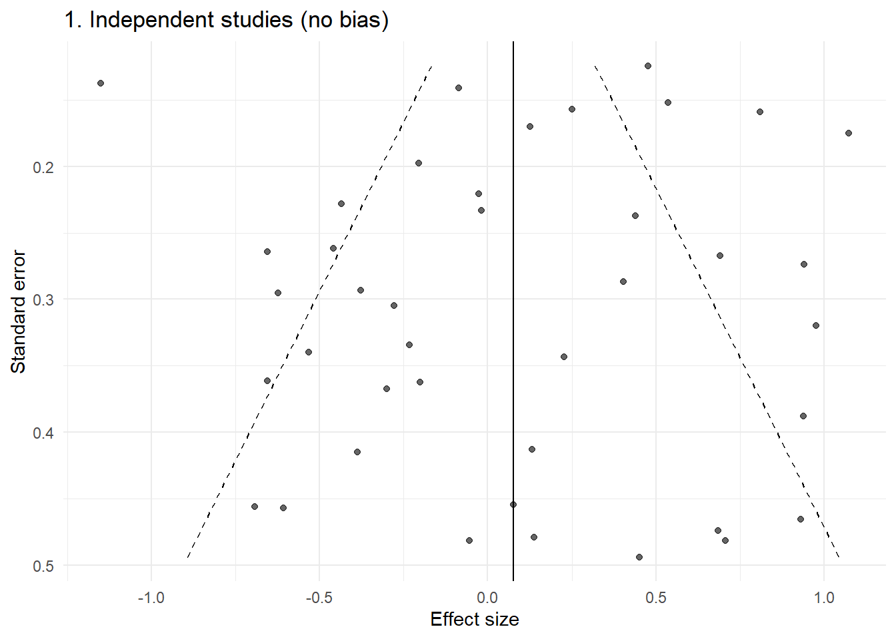
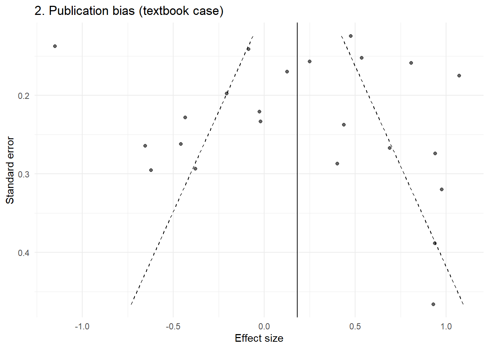
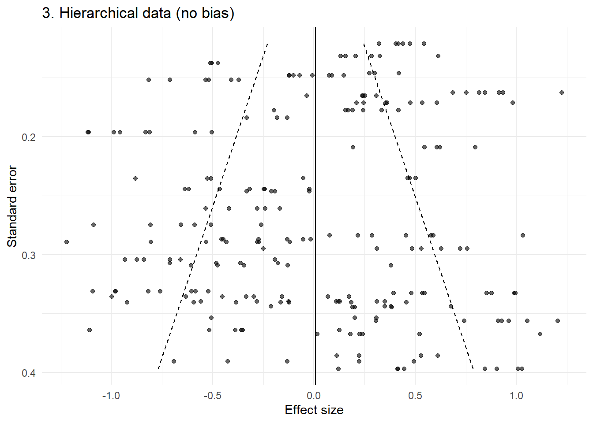
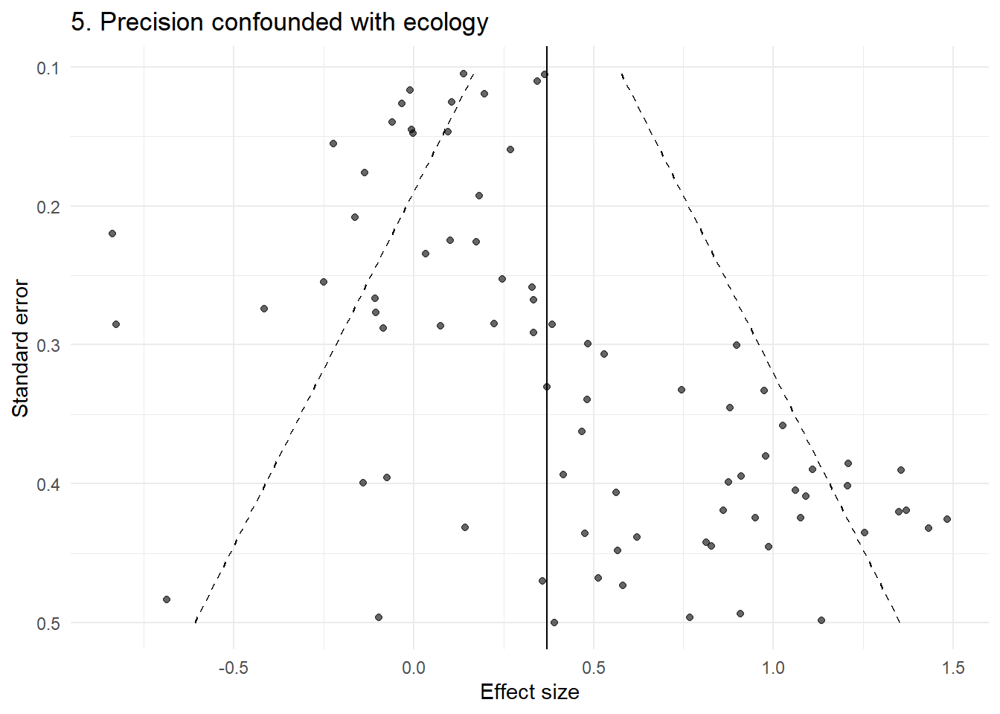
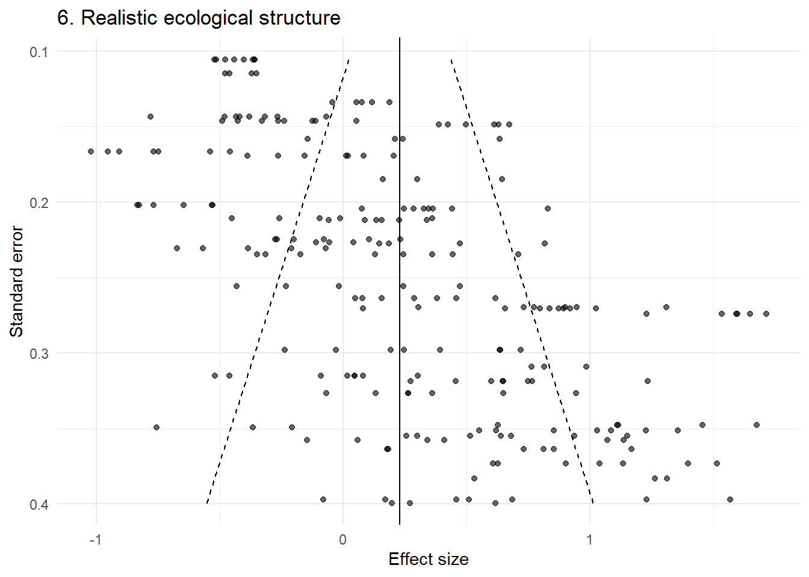
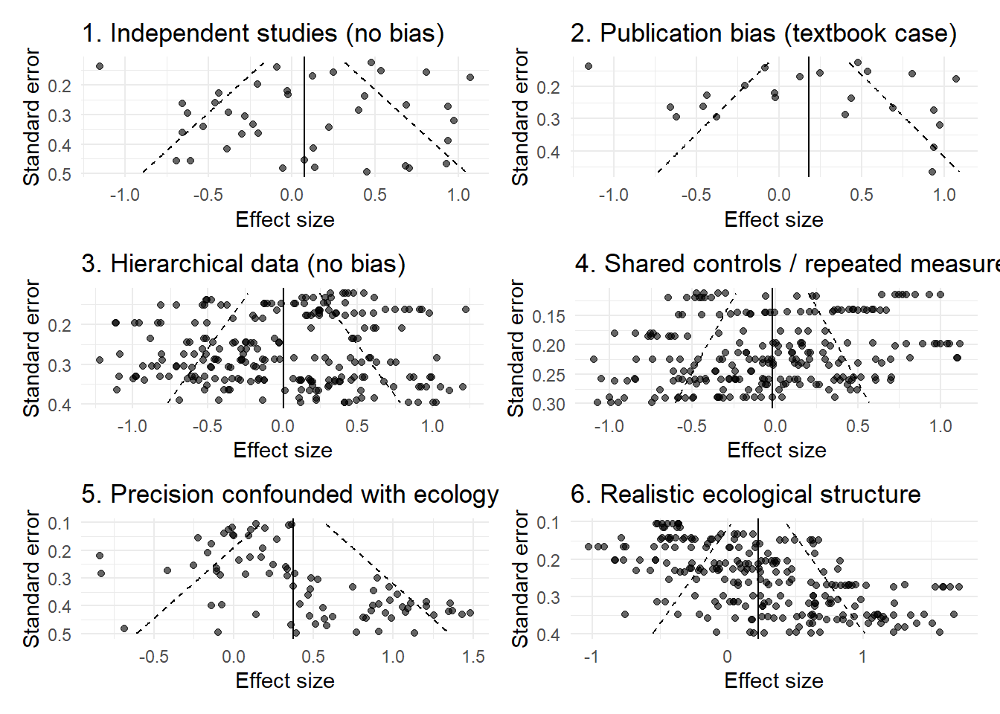

Code
library(tidyverse)
library(metafor)
library(patchwork)
set.seed(123)Funnel plots are one of the most widely used visual tools in meta-analysis. They are typically presented as a simple diagnostic for small-study effects or publication bias: if the plot is symmetric, things are fine; if it is asymmetric, something is wrong. This interpretation is already fragile (see this paper). In ecology, it is often incorrect.
Ecological meta-analyses rarely consist of independent, exchangeable study estimates. Instead, they are built from datasets with strong hierarchical structure: multiple effect sizes per study, shared controls, repeated measures, and outcomes that are intrinsically linked to study design and sample size.
When these data are plotted in a funnel plot, the resulting shape often reflects this structure rather than any underlying bias. In this post, I use simple simulations to show how funnel plot asymmetry can arise without any publication bias at all, and why visual interpretation is particularly misleading in ecological contexts.
library(tidyverse)
library(metafor)
library(patchwork)
set.seed(123)plot_funnel <- function(dat, title = "") {
# meta-analytic model
res <- rma(yi = yi, sei = sei, data = dat, method = "REML")
mu <- as.numeric(res$b)
sei_seq <- seq(min(dat$sei), max(dat$sei), length.out = 100)
funnel_df <- tibble(
sei = sei_seq,
left = mu - 1.96 * sei_seq,
right = mu + 1.96 * sei_seq
)
ggplot(dat, aes(x = yi, y = sei)) +
geom_point(alpha = 0.6) +
geom_line(data = funnel_df, aes(x = left, y = sei), linetype = "dashed") +
geom_line(data = funnel_df, aes(x = right, y = sei), linetype = "dashed") +
geom_vline(xintercept = mu) +
scale_y_reverse() +
labs(x = "Effect size", y = "Standard error", title = title) +
theme_minimal()
}We begin with the world that funnel plots assume: one independent effect size per study, with normally distributed sampling error.
n <- 40
theta <- rnorm(n, 0, 0.5)
sei <- runif(n, 0.1, 0.5)
yi <- rnorm(n, theta, sei)
dat1 <- tibble(yi, sei)
p1 <- plot_funnel(dat1, "1. Independent studies (no bias)")
p1
This is the idealised funnel: roughly symmetric, with increasing spread as precision decreases.
Now we introduce a simple selection mechanism: small, non-significant studies are less likely to be observed.
pvals <- 2 * pnorm(-abs(yi / sei))
keep <- !(sei > 0.3 & pvals > 0.05)
dat2 <- dat1[keep, ]
p2 <- plot_funnel(dat2, "2. Publication bias (textbook case)")
p2
This produces the familiar asymmetric funnel that is typically interpreted as evidence of bias.
We now move into a more realistic ecological setting.
Each study contributes multiple effect sizes, sharing a common study-level effect.
n_study <- 40
effects_per_study <- sample(3:8, n_study, replace = TRUE)
dat3 <- map2_dfr(1:n_study, effects_per_study, function(j, k) { u_j <- rnorm(1, 0, 0.5)
sei_j <- runif(1, 0.1, 0.4)
yi <- rnorm(k, u_j, sei_j)
tibble( yi = yi, sei = rep(sei_j, k), study = j ) })
p3 <- plot_funnel(dat3, "3. Hierarchical data (no bias)")
p3
Even without any publication bias, the funnel now shows clear structure: clustering, banding, and apparent asymmetry.
This arises purely from non-independence.
In many ecological datasets, study size is not random. Smaller studies may focus on particular systems, species, or experimental designs.
Here, we simulate a case where effect size is associated with study size.
n <- 80
sei <- runif(n, 0.1, 0.5)
theta <- 0.8 * (sei > 0.3) + rnorm(n, 0, 0.2)
yi <- rnorm(n, theta, sei)
dat5 <- tibble(yi, sei)
p5 <- plot_funnel(dat5, "5. Precision confounded with ecology")
p5
This produces clear asymmetry — but there is no publication bias. The pattern arises because small and large studies are studying different things.
Finally, we combine these features:
multiple effect sizes per study
shared precision within studies
strong heterogeneity
confounding between study size and effect
dat6 <- map2_dfr(1:n_study, effects_per_study, function(j, k) { sei_j <- runif(1, 0.1, 0.4)
u_j <- rnorm(1, ifelse(sei_j > 0.25, 0.6, 0), 0.4)
yi <- rnorm(k, u_j, sei_j)
tibble( yi = yi, sei = rep(sei_j, k), study = j ) })
p6 <- plot_funnel(dat6, "6. Realistic ecological structure")
p6
This looks highly structured and asymmetric — yet no publication bias has been introduced.
(p1 | p2) / (p3 | p4) / (p5 | p6)
Across these examples, the key point is consistent:
The funnel plot is not simply reflecting missing studies. It is reflecting the structure of the data.
In ecological meta-analyses, that structure often includes:
multiple non-independent effect sizes per study
shared controls or repeated measures
study-level clustering
strong heterogeneity
relationships between study design and precision
Under these conditions, the assumptions underlying funnel plot interpretation are violated.
The usual advice is to “inspect the funnel plot for asymmetry.” However, this assumes that asymmetry primarily arises from small-study effects.
These simulations show that:
asymmetry can arise without any bias
structured patterns (bands, arcs, clusters) are common
visually striking funnels can be entirely artefactual
In this context, visual interpretation is not just subjective, it is often misleading.
Rather than relying on visual inspection of funnel plots, analyses should:
explicitly account for hierarchical structure
consider study-level aggregation as a sensitivity check
use multilevel meta-analytic models
explore moderators that may be confounded with precision
interpret any small-study effect diagnostics with extreme caution
Funnel plots were designed for a world of independent study estimates.
Ecological meta-analyses do not live in that world.
Before interpreting a funnel plot, we should first ask:
What structure do these points represent?
In many cases, the answer is not “a set of independent studies,” but a complex, hierarchical evidence base and the funnel plot is simply revealing that structure.
If ecologists want to explore whether effect sizes are associated with study precision, a more defensible approach is to use a multilevel meta-regression rather than relying on visual inspection of a raw funnel plot. This follows the general approach advocated by Nakagawa et al., who recommend modelling heterogeneity and non-independence directly, and then using residual funnel plots as a supplement rather than a primary diagnostic.
The idea is simple: if smaller or less precise studies tend to report systematically different effects, then effect size may be associated with sampling variance or standard error. In ecological meta-analysis, however, this association should be tested in a multilevel framework that reflects the dependency structure of the data.
library(dplyr)
library(purrr)
library(tibble)
library(metafor)
library(ggplot2)
set.seed(123)
# Assume your data look something like this:
# dat$yi = effect size
# dat$vi = sampling variance
# dat$study_id = study identifier
# dat$obs_id = effect-size identifier within study
# dat$year = publication year (optional, for time-lag bias)
simulate_meta_ecology <- function(
n_study = 40,
min_es = 3,
max_es = 8,
tau = 0.5, # between-study heterogeneity
sigma_within = 0.2, # within-study variation
bias = FALSE, # simulate publication bias
confounding = FALSE, # precision-effect confounding
time_lag = FALSE # time trend
) {
# number of effect sizes per study
n_es <- sample(min_es:max_es, n_study, replace = TRUE)
dat <- map2_dfr(seq_len(n_study), n_es, function(j, k) {
# study-level precision (shared within study)
sei_j <- runif(1, 0.1, 0.5)
vi_j <- sei_j^2
# study-level true effect
if (confounding) {
# less precise studies tend to have larger true effects
mu_j <- rnorm(1, mean = ifelse(sei_j > 0.3, 0.6, 0), sd = tau)
} else {
mu_j <- rnorm(1, mean = 0, sd = tau)
}
# optional time trend
year_j <- sample(1990:2020, 1)
if (time_lag) {
mu_j <- mu_j + 0.02 * (year_j - 2000)
}
# generate observed effect sizes
yi <- rnorm(k, mean = mu_j, sd = sqrt(vi_j + sigma_within^2))
tibble(
yi = yi,
vi = rep(vi_j, k),
study_id = factor(j),
obs_id = factor(paste0(j, "_", seq_len(k))),
year = rep(year_j, k)
)
})
# optional publication bias / small-study selection
if (bias) {
dat <- dat %>%
mutate(
sei = sqrt(vi),
z = yi / sei,
p = 2 * pnorm(-abs(z))
) %>%
filter(!(sei > 0.3 & p > 0.05)) %>%
select(-z, -p)
}
dat %>%
mutate(sei = sqrt(vi))
}
# Simulate a dataset:
# - confounding = TRUE gives a precision-effect relationship without publication bias
# - time_lag = TRUE adds a publication year trend
dat <- simulate_meta_ecology(
n_study = 40,
min_es = 3,
max_es = 8,
tau = 0.5,
sigma_within = 0.2,
bias = FALSE,
confounding = TRUE,
time_lag = TRUE
)
# ---------------------------------------------------------
# Multilevel meta-analysis (baseline model)
# ---------------------------------------------------------
m0 <- rma.mv(
yi = yi,
V = vi,
random = ~ 1 | study_id/obs_id,
data = dat,
method = "REML"
)
summary(m0)
Multivariate Meta-Analysis Model (k = 209; method: REML)
logLik Deviance AIC BIC AICc
-119.7124 239.4247 245.4247 255.4374 245.5424
Variance Components:
estim sqrt nlvls fixed factor
sigma^2.1 0.3294 0.5740 40 no study_id
sigma^2.2 0.0386 0.1963 209 no study_id/obs_id
Test for Heterogeneity:
Q(df = 208) = 1758.9222, p-val < .0001
Model Results:
estimate se zval pval ci.lb ci.ub
0.4130 0.0947 4.3618 <.0001 0.2274 0.5986 ***
---
Signif. codes: 0 '***' 0.001 '**' 0.01 '*' 0.05 '.' 0.1 ' ' 1# ---------------------------------------------------------
# Multilevel small-study effect model
# (Egger-type meta-regression, but multilevel)
# ---------------------------------------------------------
m_pub <- rma.mv(
yi = yi,
V = vi,
mods = ~ sei,
random = ~ 1 | study_id/obs_id,
data = dat,
method = "REML"
)
summary(m_pub)
Multivariate Meta-Analysis Model (k = 209; method: REML)
logLik Deviance AIC BIC AICc
-116.1614 232.3228 240.3228 253.6536 240.5208
Variance Components:
estim sqrt nlvls fixed factor
sigma^2.1 0.2952 0.5433 40 no study_id
sigma^2.2 0.0386 0.1964 209 no study_id/obs_id
Test for Residual Heterogeneity:
QE(df = 207) = 1657.4039, p-val < .0001
Test of Moderators (coefficient 2):
QM(df = 1) = 4.9851, p-val = 0.0256
Model Results:
estimate se zval pval ci.lb ci.ub
intrcpt -0.0773 0.2369 -0.3263 0.7442 -0.5416 0.3870
sei 1.7104 0.7660 2.2327 0.0256 0.2090 3.2118 *
---
Signif. codes: 0 '***' 0.001 '**' 0.01 '*' 0.05 '.' 0.1 ' ' 1# The coefficient for 'sei' is the key term:
# if it differs clearly from zero, effect size changes with precision,
# which is consistent with a small-study effect
# (but not necessarily publication bias)
# ---------------------------------------------------------
# Time-lag bias model
# ---------------------------------------------------------
m_time <- rma.mv(
yi = yi,
V = vi,
mods = ~ scale(year),
random = ~ 1 | study_id/obs_id,
data = dat,
method = "REML"
)
summary(m_time)
Multivariate Meta-Analysis Model (k = 209; method: REML)
logLik Deviance AIC BIC AICc
-116.0127 232.0254 240.0254 253.3562 240.2234
Variance Components:
estim sqrt nlvls fixed factor
sigma^2.1 0.2950 0.5431 40 no study_id
sigma^2.2 0.0386 0.1964 209 no study_id/obs_id
Test for Residual Heterogeneity:
QE(df = 207) = 1534.7321, p-val < .0001
Test of Moderators (coefficient 2):
QM(df = 1) = 5.2047, p-val = 0.0225
Model Results:
estimate se zval pval ci.lb ci.ub
intrcpt 0.4136 0.0900 4.5952 <.0001 0.2372 0.5901 ***
scale(year) 0.2098 0.0919 2.2814 0.0225 0.0296 0.3900 *
---
Signif. codes: 0 '***' 0.001 '**' 0.01 '*' 0.05 '.' 0.1 ' ' 1# ---------------------------------------------------------
# Residual funnel plot
# ---------------------------------------------------------
dat$resid_pub <- as.numeric(residuals(m_pub))
mu_resid <- 0
sei_seq <- seq(min(dat$sei), max(dat$sei), length.out = 200)
funnel_df <- tibble(
sei = sei_seq,
left = mu_resid - 1.96 * sei_seq,
right = mu_resid + 1.96 * sei_seq
)
ggplot(dat, aes(x = resid_pub, y = sei)) +
geom_point(alpha = 0.6) +
geom_line(data = funnel_df, aes(x = left, y = sei), linetype = "dashed") +
geom_line(data = funnel_df, aes(x = right, y = sei), linetype = "dashed") +
geom_vline(xintercept = 0) +
scale_y_reverse() +
labs(
x = "Residual effect size",
y = "Standard error",
title = "Residual funnel plot after multilevel meta-regression"
) +
theme_minimal()
This is not a magic solution. No publication-bias method is ideal in the kinds of hierarchical, heterogeneous datasets common in ecology, and Nakagawa et al. are very clear on that point. A multilevel meta-regression plus a residual funnel plot is much closer to the structure of ecological evidence than a visually interpreted raw funnel plot.